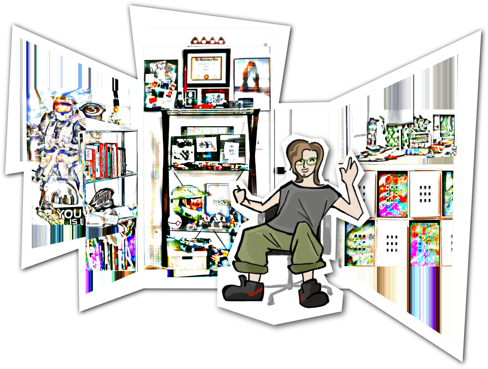

EVANALLEY,
digital designer
Hi, I'm Evan! I'm a multimedia designer who does a lot of different things and stays busy, so this is a bit of a "disambiguation page." Click the links below to check out my more specific websites!

about
I love collaboration, so most of my projects are focused around realizing a collective idea generated by the team; I read once that the goal of all art is to express the zeitgeist, and I took that to heart. I believe that it's through friction that interesting work is created, so I'm quite anti-AI.
Aesthetically, I'm interested in navigating the ways we interact with the digital world and examining the artifacts left behind by those interactions. I pull a lot of inspiration from 20th century desingers, especially Frank Lloyd Wright and Ray and Charles Eames.